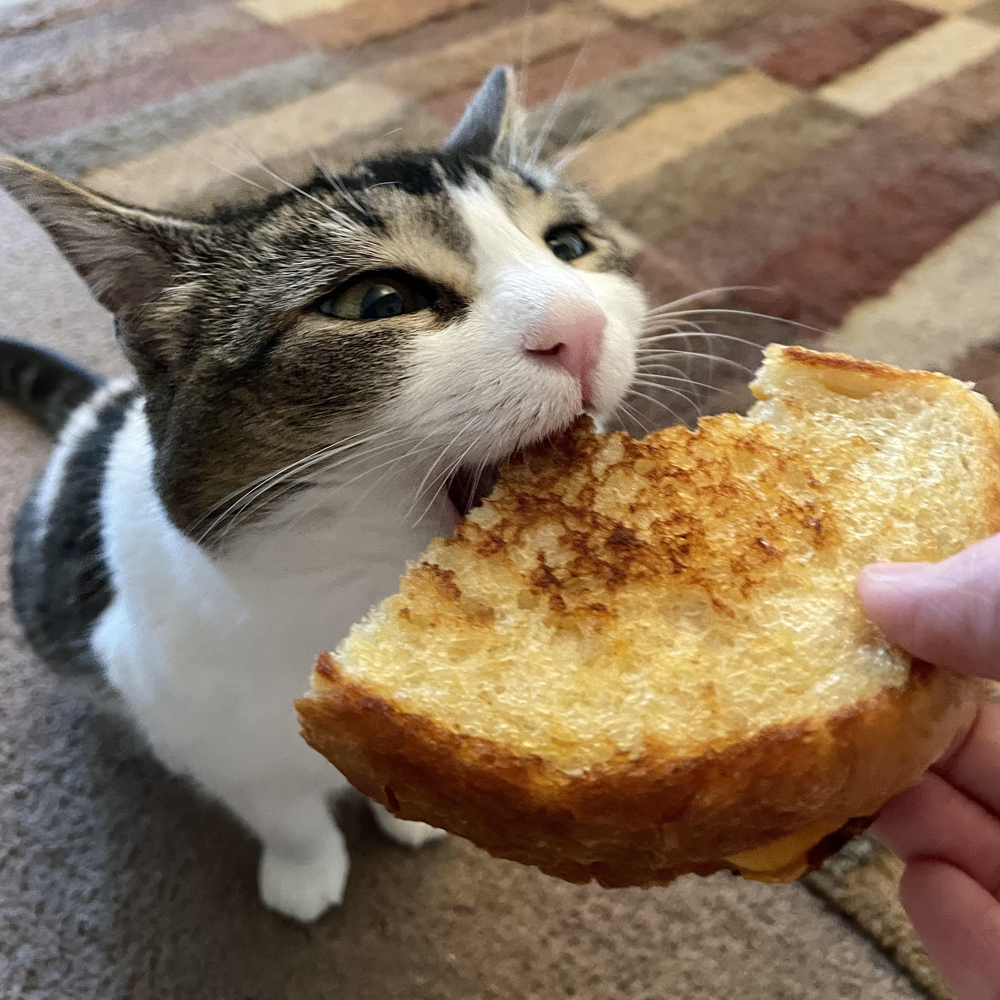

Grilled Cheese Sandwich

Description
Grilled cheese recipe!
Ingredients
- Sourdough bread
- Garlic butter spread
- Cream cheese spread
- 1 slice havarti
- 1 slice provolone
- 1 slice colby jack
- 2 tbsp butter
Ingredients for garlic butter spread
- 1 stick of softened salted butter
- garlic powder
- 1/4 cup shredded mild cheddar
Ingredients for cream cheese spread
- 1/3 cup of softened cream cheese
- mayo
- garlic powder
- black pepper
- italian seasoning
- red pepper flakes
seasonings are to taste
Steps
- First we will need to prepare the garlic butter and cream cheese spreads! We can do this by combining and mixing the ingredients
for these two spreads in separate containers.
- Cut two thick slices of sourdough bread and spread the garlic butter spread on the outside of these slices
- Assemble the sandwich by flipping the bread over and placing a slice of provolone and colby jack cheese on one
piece of bread. Finish assembling the sandwich by spreading the cream cheese spread on top of the slice of bread with provolone and colby jack.
Place a slice of harvarti cheese and close the sandwich with the second slice of sourdough bread.
- It's time to grill our sandwich. Melt some butter in the skillet over medium to low heat. Add the sandwich and cook at low heat
until both sides of the sandwich are golden and the cheese has melted.
Enjoy!